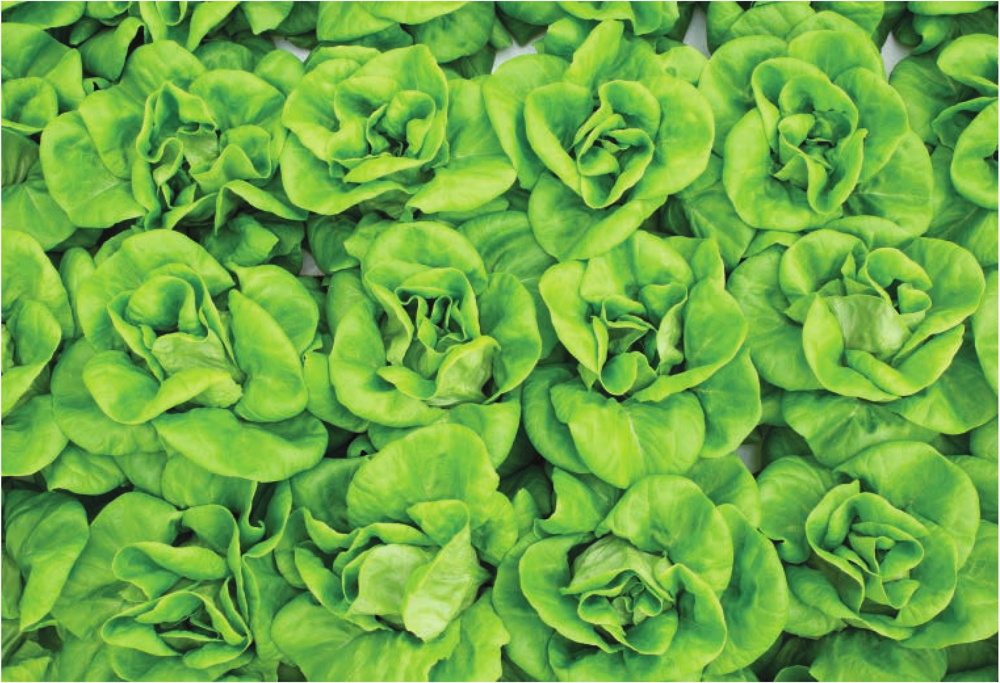

APPENDIX CROP SELECTION CHARTS KEY Recommended DIY System B Bottle Hydroponics F Floating Rafts W Wicking Bed N NFT T Top Drip M Media Beds FD Flood and Drain A Aeroponics V Vertical Gutter Garden Rex butterhead lettuce LETTUCE • Recommended DIY Systems: Lettuce can grow in any of the hydroponic systems mentioned in this book. • Germination Temperatures: Ideal germination temperature is 60-70°F, but germination will occur in much wider temperature range. • Water Temperatures: Ideal water temperature is 65-70°F, but healthy lettuce crops have been observed in 55-90°F water. • EC: Healthy crops have been observed growing in nutrient solutions with ECs in the range of 0. 7-2.8. The exact target EC will depend on light levels, water source, environment, and crop age, but in general an EC of 1 .8-2.3 will produce a healthy crop. • pH: Healthy crops have been observed growing in nutrient solutions with pHs in the range of 5.2-7. Best growth has been observed at pH of 5. 5-6.0. • Air Temperatures: Ideal air temperature is 65-75°F, but healthy lettuce has been observed growing in temperatures 50-95°F. 172 DIY HYDROPONIC GARDENS
